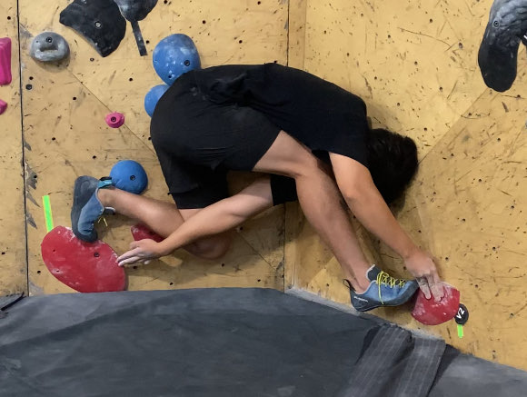

What is your favorite coding languages?
My favorite language varies from the type of development I am doing. For web development, I really enjoy working with a MERN stack but I want to explore different backends. For technical interview / preparing for software engineering roles, I love working with Python.
I love climbing overhang, roof, and long top rope routes. I love the feeling of being able to climb a route that is very difficult and requires a lot of strength and technique. I also love the feeling of being able to climb a route that is very long and requires a lot of endurance. I am slowly starting to like slab climbing, but its a love / hate relationship, love when I can do them, hate when I can't.
What are your favorite types of climbs?
What are your favorite kpop groups?
I love listening to Lesserafim, NewJeans, Twice, and IVE. I love their music and their performances.